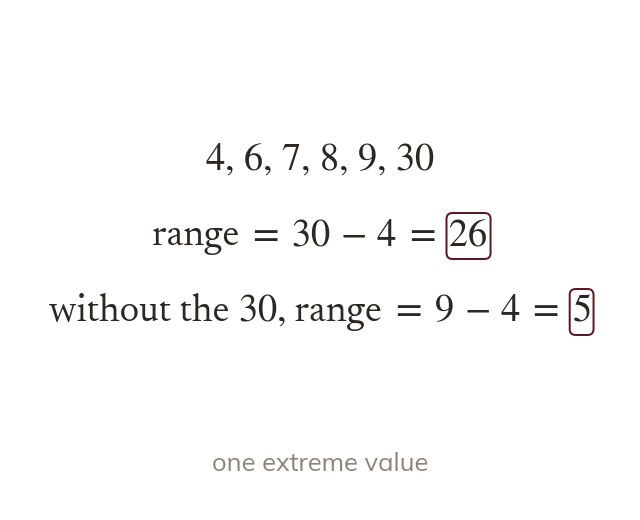
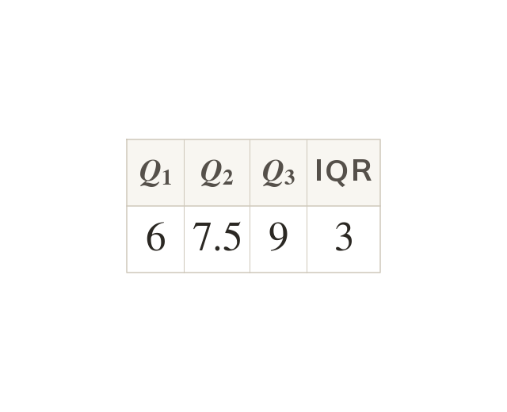
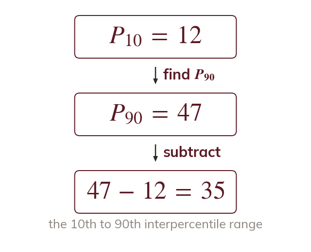
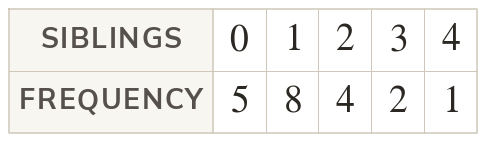
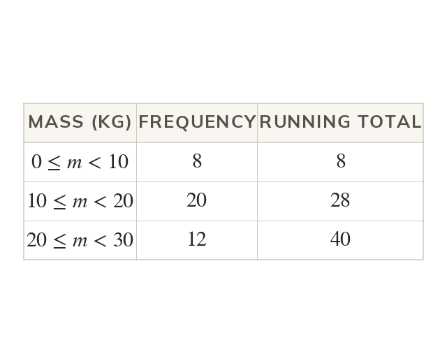
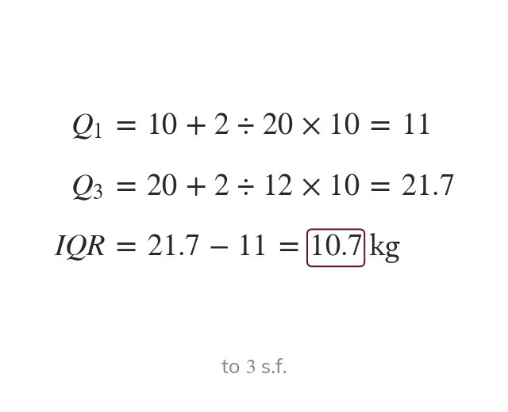
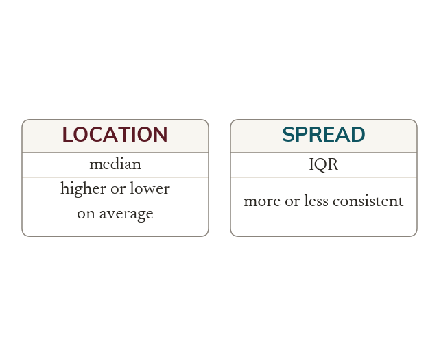
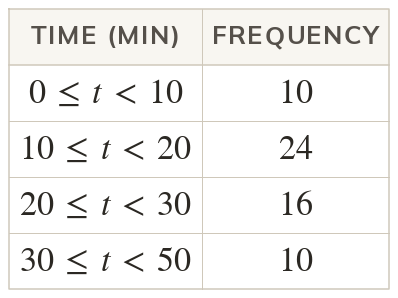

The range
The range is the largest value minus the smallest. It is quick to find, but one extreme value can change it a lot.
Two data sets can share an average and still differ in how spread out they are. The range, the interquartile range and interpercentile ranges measure that spread, and the next lesson adds the standard deviation, the spread about the mean.
Work down the page at your own pace. Write every answer in your book first, then click to check it.
Read each card, then follow the worked examples one step at a time.

The range is the largest value minus the smallest. It is quick to find, but one extreme value can change it a lot.

The IQR is the spread of the middle half of the data. An extreme value at either end does not change it.

The 10th to 90th interpercentile range is
It is the spread of the middle of the data.

Pick an answer. If it's wrong, the feedback tells you which mistake it was.
Write the blanks in your book first, then tap each one to check.
Read each card, then follow the worked examples one step at a time.

Estimate and by interpolation, at positions and
Then IQR

is the 10th value, of the values into
is the 30th value, of the values into

Compare a measure of location and a measure of spread, and say what each means in context. Higher is about location, and more consistent is about spread.

Pick an answer. If it's wrong, the feedback tells you which mistake it was.
Write the blanks in your book first, then tap each one to check.
Finished? Next lesson: S2.4 Variance and Standard Deviation.
For each skill, tap the one that is true for you today. Your Revise pages start with anything you mark Not yet.
Your ratings are saved on this device only.
Log in, then search for a code to practise that skill.